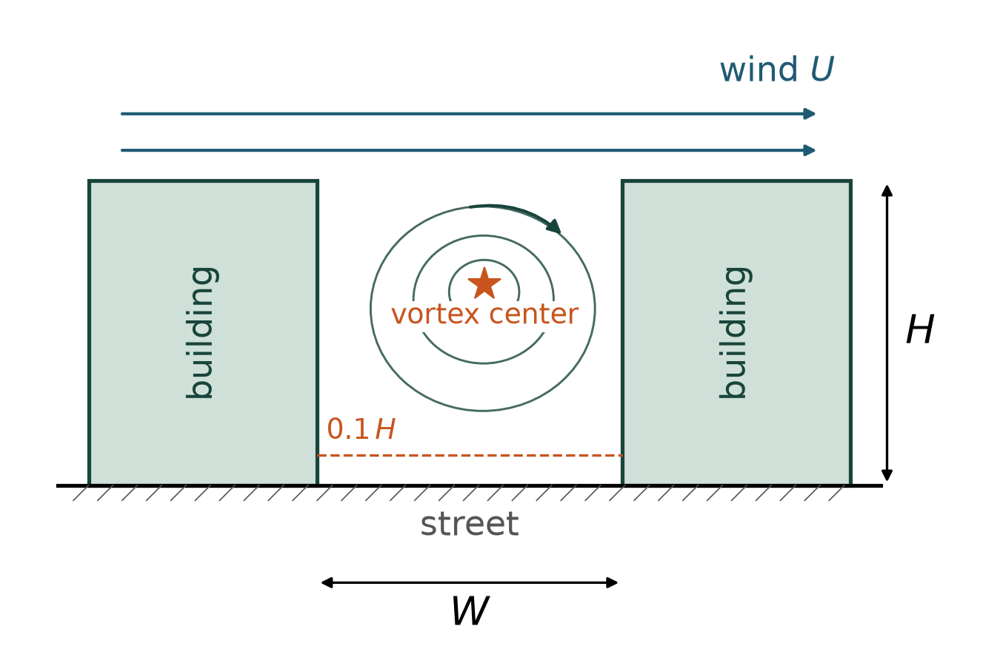
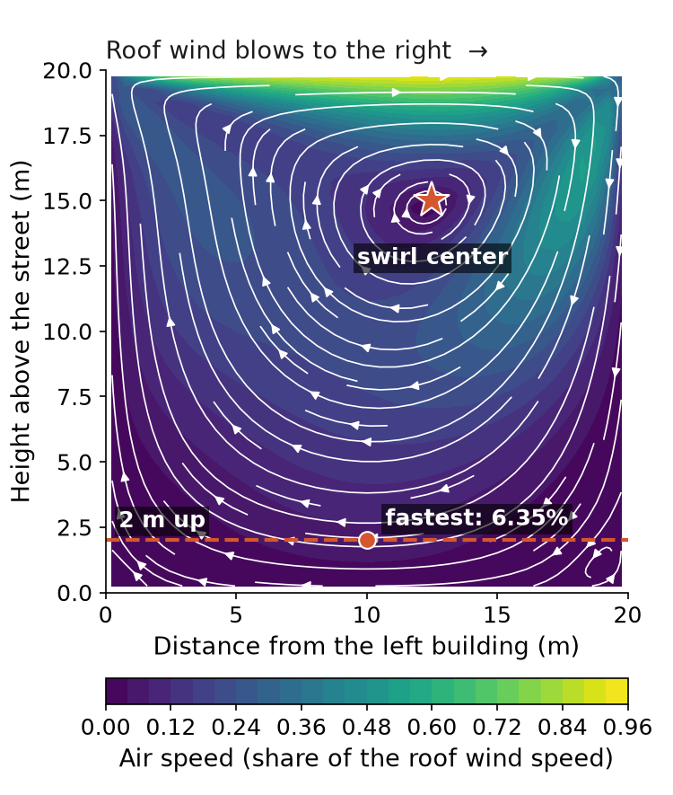
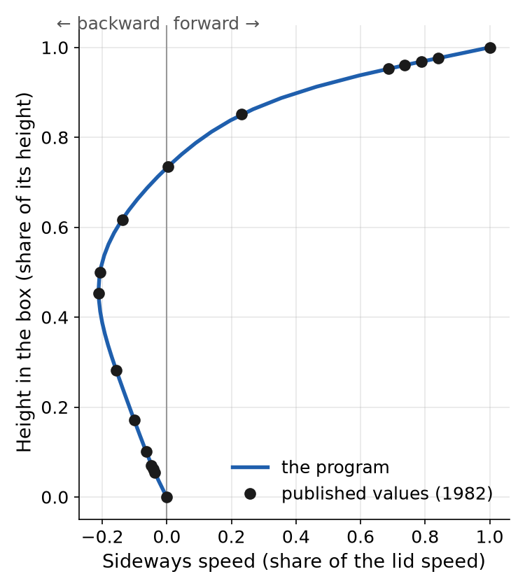

Words with a dotted underline, like agent team, are explained in videos 1 to 3.
The problem
City planners want to know how air moves in a street between two tall buildings, because the air carries fumes and heat. We picture the street from the side as a square of air, 20 meters on each side, a box whose moving lid is the wind (engineers say lid-driven cavity). The agent team writes a program that computes how fast the air moves everywhere in that square.

What we want to find out
- Where is the center of the swirl, in meters from the left building and above the ground?
- How fast does the air move sideways 2 meters above the street, as a share of the roof wind speed?
- Does the program reproduce two known answers, for air pushed between two flat plates (channel flow) and for the box with a moving lid?
What the agent team does

The implementer, the agent that writes code, writes the program and runs it on the street and both known cases. The reviewer reads the code, and the verifier runs it again to test the answers. You get the program, its tables and pictures, a short summary with the commands that rebuild them, and a Word report from the report writer.
What the calculation leaves out
- The program treats the air as calm and slow, so the swirl settles into one steady pattern.
- Engineers rate this with the Reynolds number: low means smooth, or laminar, and high means gusty, or turbulent. Ours is 100, and real city wind is near 10 million.
- So our results show the shape of the swirl, not the real speeds in a street.
What you need to run it
A run stops when it has spent $3.
What a good answer looks like
- When the verifier runs the program again, it matches both known answers. Between the plates it matches the exact answer to twelve decimal places. In the lid box, its speeds stay within 5 percent of the lid speed from the values Ghia, Ghia and Shin published in 1982. No grid square may gain or lose air: its divergence stays below one ten-billionth. The speeds must stop changing: the residual, their largest rate of change, stays below one trillionth between the plates and one millionth in the lid box for 200 steps. A program that gets two known answers right is more likely to be right about the street, whose answer nobody knows.
- The program follows the method we set and solves new boxes without changes to its code. It cuts the box into small squares, with pressure at each center and air speeds on the edges (a staggered grid). Each time step moves the air, then corrects the pressure so no air piles up in a square (Chorin's projection method).
- Every question is answered by a picture or table that the program made, with labeled axes. The verifier computes the swirl center and the speed at 2 meters on its own and gets the same values.
- The team's summary lists what to type to rebuild every result and names where the 1982 values come from. It says that real streets are turbulent and that AI did the work.
What the team found
The pictures and numbers come from our sample run. The verifier passed it, and our own later check confirmed every answer below. That check also found two small flaws that change none of them. In a test box whose open sides all have speeds you set, with no free exit, the program slightly changes those speeds. One row of the team's summary also loses its number.
- The swirl center sits 12.5 meters from the left building and 15 meters above the ground (the lowest point of the stream function, a measure of the air's path). That is high in the street and a little toward the right building, the way the wind blows.
- At 2 meters up, the fastest sideways air moves at 6.35 percent of the roof wind speed. It flows against the roof wind, from right to left, because the bottom of the swirl turns the other way.
- Both known answers matched. Between the plates, the program matched the exact answer to thirteen decimal places. In the lid box, its largest gap from the 1982 values was 0.87 percent of the lid speed, well inside the 5 percent limit.


Try it yourself. The download holds the problem, the list of what a good answer must show and the agent team. Unzip it into your Studio folder, open the unzipped folder in OpenCode as in video 2, and type /do to start a run. On Windows, extract the zip into Studio with section A5, steps 3 to 8 of the walkthrough, then open the folder Studio\cavity-city-airflow-team as in section A7. When the team shows its plan, type Approve to start the work, or say what to change.